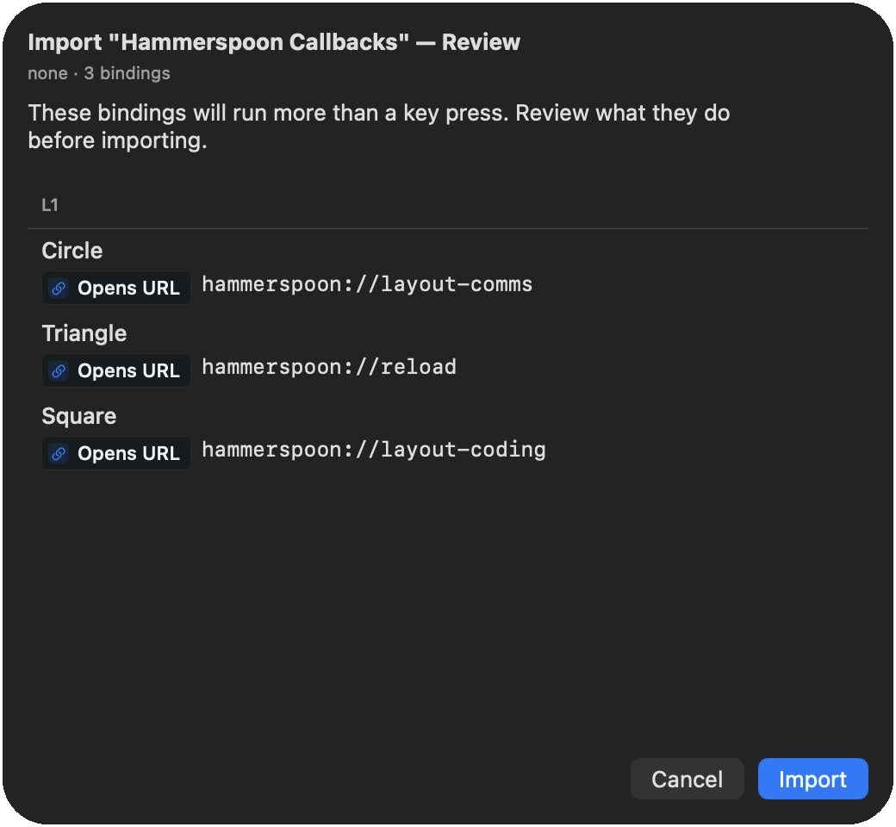

A mouse needs a desk.
Your controller doesn't.
Steer turns it into a mouse and keyboard: point and click, type, scroll, arrange windows, reach an app's own menus. You stop getting up.
Plug it in, grant one Mac permission, and it already works. Nothing to configure.
- One stick points, the other scrolls
- Any shortcut, app, or saved task
- Hold one button: the others change
- Triggers can push back before the click
- A quiet buzz for the moments that earn it
- The light strip, any colour you like
- One stick points, the other scrolls
- Any shortcut, app, or saved task
- Hold one button: the others change
- Two buttons at once: one more job
- A quiet buzz for the moments that earn it
- Tap or hold: two jobs per button
- One stick points, the other scrolls
- Any shortcut, app, or saved task
- Hold one button: the others change
- Tilt it and the cursor follows
- A quiet buzz for the moments that earn it
- Tap or hold: two jobs per button
- One stick points, the other scrolls
- Any shortcut, app, or saved task
- Hold one button: the others change
- Tap or hold: two jobs per button
- Two buttons at once: one more job
- A buzz, if your pad supports it
Browse, write, edit, present.
A lap keyboard, a phone remote, a trackpad on the sofa arm: each does four things out of five, and the fifth sends you back to the desk. Typing, an app's own menus, moving windows, launching apps: they are all on the controller, so the trip back does not happen.
Run your whole Mac from the couch.
Browse, type, launch apps, play and pause: from the sofa, the bed, anywhere a mouse won't follow. The on-screen keyboard is a wheel: aim the stick at a slice of letters, tap a button under your thumb, and the search box fills without you getting up.
When a mouse hurts, or never felt natural.
A controller rests in loose hands: nothing to pinch, no fine wrist work, no reaching across the desk. If sore wrists, tremor, pain, or using one hand make a mouse hard, this is a different shape to hold.
Comfort is personal, so the honest test is your own hands.
See the accessibility setup →Point at your slides from the back row.
Advance your slides from wherever you are standing, and move a bright dot onto the chart you are talking about. You never walk back to the laptop.
Cut without touching the keyboard.
Scrub with the triggers: one rolls the video back, the other forward, and the cut lands under your thumb, the way a dedicated editing console does it, on the controller in your drawer. Ready-made for DaVinci Resolve and Final Cut Pro.
If it takes a keyboard or a mouse, it takes a controller.
A PlayStation pad can light up to show what the agent is doing, any pad with rumble can buzz when it needs you, and you approve from across the room. See the recipe →
The trigger stiffens before it clicks.You feel the step before you see it.Tilt the controller. The cursor follows.You know it worked without looking up.
You do not have to watch the screen to know it worked. Turn on the adaptive triggers and they stiffen under your finger, so you feel the click before it fires. The grip buzzes as you flip through your apps or hit the volume ceiling, and the light bar can mean whatever you want.Flip through your apps and each one lands as a pulse in your grip. Hit the volume ceiling and your hands know before the screen does. The chattier buzzes wait until you ask.Tilt your hands and the pointer follows: a second way to point, on top of the sticks. The rumble marks each app you flip past, and the volume ceiling.If your controller has haptics, Steer drives them: a pulse for each app you flip past, a tap at the volume ceiling, at a strength you set.
Make any button do anything.
It works the moment you plug in. Pick a button, pick what it does. No code, no setup first.
Layers are Shift, for a controller.
Hold one of the buttons along the top edge and every other button takes a second job, the way Shift turns 1 into an exclamation mark. Five holds, so a handful of buttons covers a whole day: snap a window into place, run a saved task, pop up a ring of your apps.
Captured from the app; no renders, no touch-ups.
Your setup stays on your Mac.
Steer needs permission to move your cursor and type. Here is what it does with that access. Not a trust badge; the actual answer.
No account, no cloud, no tracking.
Anything risky is shown to you first.
Import someone else's setup and, if a button does more than press a key (opens a web page, runs a script), Steer shows you each one before it applies. You approve it, or it does not run. Scripts run from your own macOS scripts folder: an import can name one you already installed, not bring its own.


Plain files, on your computer.
Your mappings live on your Mac, in a file you can open and read. No sign-in, nothing synced.
What you type stays on your Mac.
Steer goes online for three reasons. It checks your licence key when you enter it, then re-checks that key on launch and about once a day. It looks for an update when you ask. It fetches a setup only if you paste a link to one.
Changes can be undone.
Steer saves a restore point as you edit each settings pane, and keeps a history you can walk back through.
No private Apple code is linked in.
Apple published no recipe for some of what Steer does: real pinch and rotate, and speaking directly to a controller's triggers, rumble, and light bar. Steer works those out from scratch, linking no private frameworks, only the developer tools Apple publishes for everyone. The full technical account is written out, because hiding it would be worse.
What it can't do is written down too.
Where a controller can't do something, Steer hides it rather than pretending. The controller page marks the gaps, including the features nobody has yet confirmed on real hardware because I don't own the pad. Snapping windows into place needs the Rectangle app, installed separately. The login screen and Touch ID stay out of reach.
One price. Yours to keep.
- 14-day free trial at launch: no card, no account
- Every feature your controller supports, included
- Free updates as macOS changes
- Direct from the developer, checked by Apple
Steer is in final testing. One email the day the free trial opens: one message, from me, and your address goes nowhere else. Name your controller and you hear first when a pad needs a tester.
Prefer email? steer@seanfloyd.dev works too.
Built for myself. I use it daily. Sean Floyd